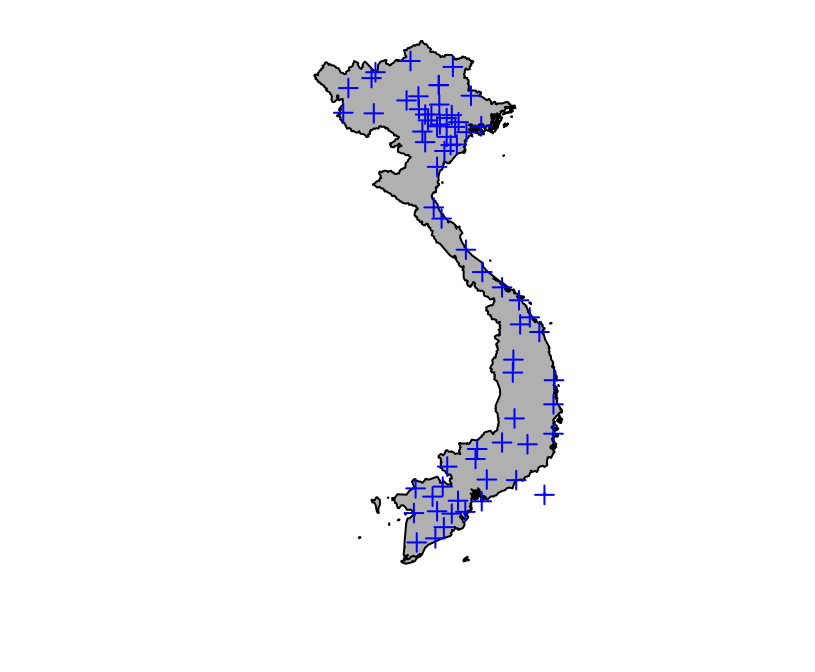
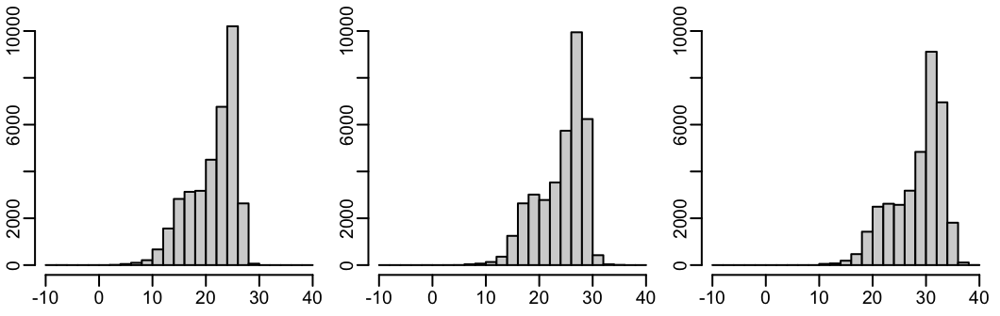
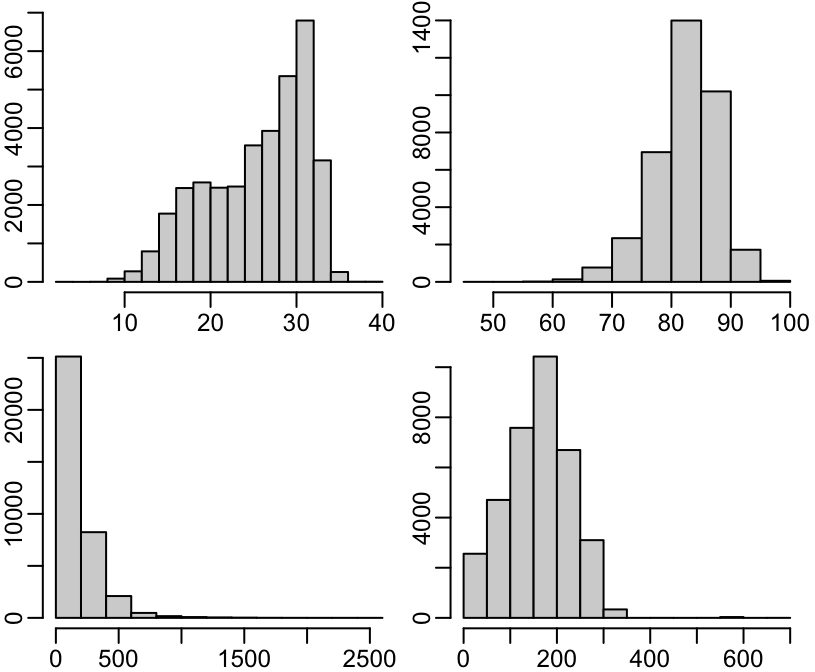
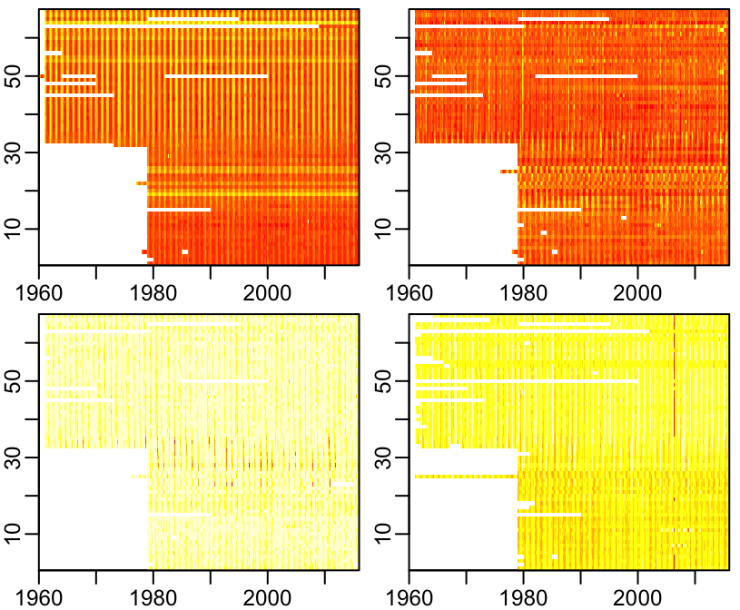
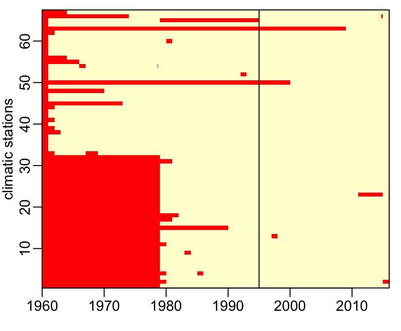

Using imhen
Marc Choisy
2017-05-23
 |
This package contains meteorological data for Vietnam from the Vietnamese Institute of Meteorology, Hydrology and Environment (IMHEN). This is monthly data in 67 climatic stations from January 1960 to December 2015. Climatic variables are min, max, average temperatures, absolute and relative humidities, rainfall and hours of sunshine. |
Installation and loading
You can install imhen from GitHub
> # install.packages("devtools")
> devtools::install_github("choisy/imhen", build_vignettes = TRUE)Once installed, you can load the package:
> library(imhen)Usage examples
The package contains two dataframes. The first one is meteo which contains the climatic variables Tx, Ta, Tm, aH, rH, Rf and Sh plus time (year and month) and space (station) information:
> head(meteo)
year month station Tx Ta Tm aH rH Rf Sh
1 1961 January Bac Kan 19.1 13.9 10.5 13.1 82 5.3 NA
2 1961 February Bac Kan 18.3 15.1 13.2 14.7 85 21.5 NA
3 1961 March Bac Kan 23.2 19.6 17.5 20.1 87 85.4 NA
4 1961 April Bac Kan 28.1 23.5 20.5 24.8 87 185.8 NA
6 1961 May Bac Kan 31.2 25.8 22.1 27.1 83 34.9 NA
7 1961 June Bac Kan 32.6 26.9 23.1 29.3 83 314.7 NANote that the data frame is not “complete”, with some combinations of the year, month and station being missing:
> table(with(meteo, table(year, month, station)))
0 1
8364 36660 The second one is stations which contains the coordinates (longitude and latitude) and the elevation:
> head(stations)
station longitude latitude elevation
1 Bac Kan 105.8167 22.133333 174
2 Bac Giang 106.2000 21.283333 7
3 Bac Lieu 105.7167 9.283333 2
4 Bac Ninh 106.0500 21.200000 5
5 Ba Tri 106.6000 10.033333 12
6 Ba Vi 106.4000 21.083333 20Mapping the climatic stations
We can transform the climatic stations coordinates into a spatial object:
> library(gadmVN)
> vietnam <- gadm(level = "country")
> coordinates(stations) <- ~ longitude + latitude
> proj4string(stations) <- vietnam@proj4stringAnd plot the stations on the map:
> plot(vietnam, col = "grey")
> points(stations, col = "blue", pch = 3)
Visualizing the climatic stations elevations
We can also look at the elevations of the climatic stations:
> plot(sort(stations$elevation, TRUE), type = "o",
+ xlab = "stations ranked by decreasing elevation", ylab = "elevation (m)")
Exploring the climatic variables
Let’s look at the temperatures:
> val <- c("Tm", "Ta", "Tx")
> T_range <- range(meteo[, val], na.rm = TRUE)
> breaks <- seq(floor(T_range[1]), ceiling(T_range[2]), 2)
> par(mfrow = c(1, 3))
> for(i in val)
+ hist(meteo[[i]], breaks, ann = FALSE, col = "lightgrey", ylim = c(0, 10500))
Looks good. Let’s check the consistency of the values:
> for(i in val) print(range(meteo[[i]], na.rm = TRUE))
[1] -9.256667 29.900000
[1] 0.0 35.8
[1] 5.7 39.3
> with(meteo, any(!((Tm <= Ta) & (Ta <= Tx)), na.rm = TRUE))
[1] FALSELet’s look at the other variables:
> val <- c("aH", "rH", "Rf", "Sh")
> par(mfrow = c(2, 2))
> for(i in val) hist(meteo[[i]], col = "lightgrey", ann = FALSE)
Looks good too.
> for(i in val) print(range(meteo[[i]], na.rm = TRUE))
[1] 2.9 39.9
[1] 49 100
[1] 0.0 2451.7
[1] 0 674Visualizing the data spatio-temporally
Let’s first Make a year, month, station template for a full design of the data:
> y <- sort(unique(meteo$year))
> m <- factor(levels(meteo$month), levels(meteo$month), ordered = TRUE)
> s <- stations$station[order(coordinates(stations)[, "latitude"])]
> s <- factor(s, s, ordered = TRUE)
> template <- setNames(expand.grid(y, m, s), c("year", "month", "station"))
> attr(template, "out.attrs") <- NULL # removing useless attributesThe full version of the data:
> meteo_full <- merge(template, meteo, all.x = TRUE)Let’s visualize it:
> x <- as.Date(with(unique(meteo_full[, c("year", "month")]),
+ paste0(year, "-", as.numeric(month), "-15")))
> y <- seq_along(stations)
> nb <- length(y)
> col <- rev(heat.colors(12))
> show_data <- function(var) {
+ image(x, y, t(matrix(meteo_full[[var]], nb)), col = col,
+ xlab = NA, ylab = "climatic stations")
+ box(bty = "o")
+ }Missings values for all the temperature variables:
> opar <- par(mfrow = c(2, 2))
> for(i in c("Tx", "Ta", "Tm")) show_data(i)
> par(opar)
Showing very well the higher seasonality in the north than in the south. Missing values for the absolute and relative humidities as well as for rainfall and hours of sunshine:
> opar <- par(mfrow = c(2, 2))
> for(i in c("aH", "rH", "Rf", "Sh")) show_data(i)
> par(opar)Showing strong seasonality of absolute humidity in the north of the country, interesting pattern of relative humidity in the center of the country, high rainfalls in the fall in the center of the country, and out-of-phase oscillations of the number of hours of sunshine between the north and the south of the country. It seems though that there are strange outliers in sunshine in the north in 2008 or so. Let’s now combine the missing values from all the climatic variables:
> library(magrittr)
> library(dplyr)
> meteo_full %<>% mutate(combined = is.na(Tx + Ta + Tm + aH + rH + Rf + Sh))
> show_data("combined")
> abline(v = as.Date("1995-01-01"))
The locations of the 6 stations with missing value in the recent year are:
> subset(meteo_full, year > 1994 & combined, station, TRUE) %>% unique
[1] Bac Ninh Tan Son Hoa Moc Hoa Tuy Hoa Cao Bang Bac Lieu
67 Levels: Ca Mau < Bac Lieu < Soc Trang < Cang Long < ... < Ha GiangLeft to do
- pairwise distances
- time series (trends seasonalities)
- time seasonal variation
- PCA?